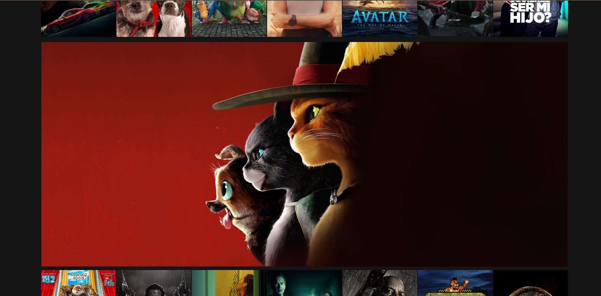
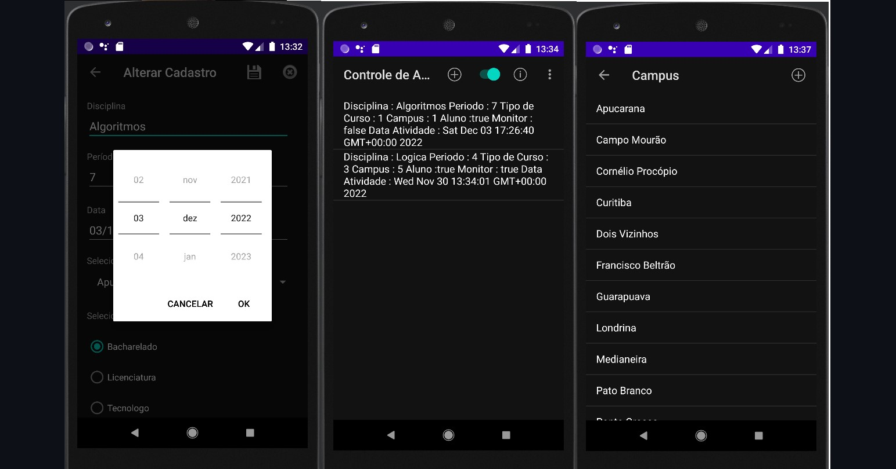
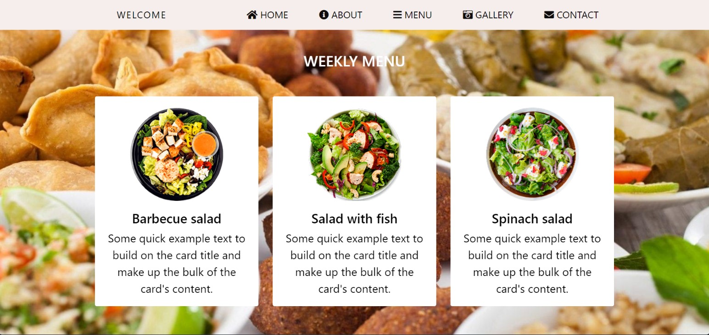
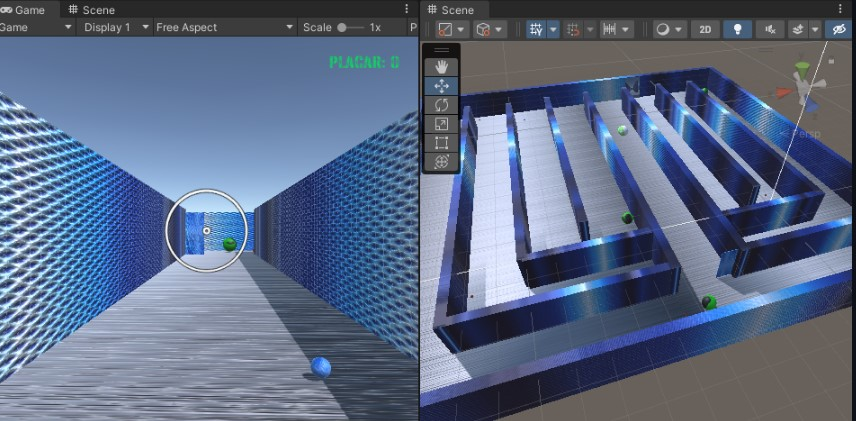

About
Software Engineer

Software Engineering & Quality Assurance
Atualmente estudante de Engenharia de Software na Universidade Tecnologica Federal do Paraná, atuando como Quality Assurance (QA) na empresa Tata Consultancy Services desempenhando um papel na garantia da qualidade dos produtos e serviços de software. Com a responsabilidade de testar e verificar se as aplicações atendem aos requisitos e padrões estabelecidos, identificando erros, falhas e possíveis melhorias. Como QA, atua em testes funcionais, testes de regressão, testes de usabilidade e outros tipos de testes para garantir que o software funcione corretamente em diferentes cenários, atualmente com maior foco em automação de testes. Atua em estreita colaboração com desenvolvedores e outros membros da equipe para compreender os requisitos e garantir que os produtos estejam de acordo com as expectativas dos usuários. Além dos testes, também contribui para a melhoria contínua dos processos de desenvolvimento de software. Analisa e documenta os resultados dos testes, identifica padrões de defeitos e propõe soluções para evitar problemas futuros. Com capacidade de identificar problemas de forma proativa e propor soluções eficazes é fundamental para melhoria contínua do sistema. Como estudante de Engenharia de Software, está constantemente aprendendo e se atualizando sobre novas técnicas e ferramentas de desenvolvimento e testes, utiliza habilmente ferramentas como Cypress, Selenium, Robot framework, Appium, JUnit5, Mockito e outras, para automatizar testes em diferentes tipos de aplicações. Além das ferramentas de automação, se destaca pelo conhecimento em desenvolvimento, Back-end; Nodejs, Express, Mustache entre outros Front-end: Angular, Bootstrap, CSS3, Javascript. Banco de Dados: MySQL, PostgreSQL, SQLServer, MongoDB. No contexto dos testes de API, utiliza ferramentas como Postman, Talend API Tester e Insomnia.
- Instituição: Universidade Tecnologica Federal do Paraná
- LinkedIn: in/madenx/
- Cidade: Londrina, BRA
- Repositorio: https://github.com/M4deN
- Email: Madenxx@outlook.com
- Quality Assurance: Tata Consultancy Services
GitHub Stats
GitHub Stats possui informações relevantes sobre o status atual, contando com um total de 47 repositórios com uma ampla variedade de projetos. Esses repositórios abrangem desde aplicações desktop até aplicações web completas e funcionais. Além dos diferentes tipos de projetos, é importante destacar que boa parte desses projetos contam com testes automatizados abrangentes. Esses testes abrangem os mais variados tipos de cenários e garantem a qualidade e a estabilidade desses projetos. utilizando frameworks como Cypress, Selenium, Robot, Appium, JUnit, Mockito para realizar testes em suas aplicações e APIs. Com essa abordagem abrangente de testes automatizados, assegurando que esses projetos estejam sempre mantendo o padrão de qualidade, independentemente do tipo de aplicação ou plataforma.
Total Commits
Repositórios
Linguagens Utilizadas
Total Estrelas
Habilidades
Linguagens de programação que eu mais usei desde que comecei a lidar com o mundo de desenvolvimento, pretendo aperfeiçoar ainda mais essas que sei e adquirir o conhecimento de outras possiveis, como Javascript, Java, MySQL, MongoDB, Node.js e entre outras.
Resume
Estudante de Engenharia de Software no 8º período, atuando na empresa Tata Consultancy Services como Quality Assurance, atuando com testes manuais e automação de testes, na qual tem aprimorado suas habilidades, visando garantir a qualidade de Software utiliza suas habilidades em automação de testes para melhorar a eficiência dos processos de testes nos projetos ao qual atua.
Sumário
Educação
Rotary Club & Unidade Polo
2004 - 2012
Rotary Club & Unidade Polo, Ibiporã, PR
Concluiu os estudos do ensino fundamental e médio nas escolas Rotary Club e Unidade Polo. Durante essa fase educacional, obteve uma base sólida de conhecimentos e desenvolvendo habilidades importantes para jornada acadêmica e pessoal. Essas instituições de ensino proporcionaram um ambiente de aprendizado enriquecedor.
Engenharia de Software
2018 - 2023
Universidade Tecnologica Federal do Paraná, Cornélio Procópio, PR
Em 2018, migrou de curso e de campus iniciando uma nova jornada acadêmica ao ingressar no curso de Engenharia de Software na UTFPR-CP. Durante esse período, segue adquirindo uma ampla gama de conhecimentos na área, abrangendo desde fundamentos teóricos até habilidades práticas no desenvolvimento de software. Com a oportunidade de explorar os mais diversos aspectos da Engenharia de Software, incluindo programação, arquitetura de sistemas, gerenciamento de projetos e qualidade de software. Essa trajetória acadêmica enriquecedora proporciona uma base sólida para enfrentar os desafios do setor e se destacar como profissional na área de Engenharia de Software.
Experiência Profissional
Desenvolvimento Freelancer
2016 - 2021
Experiência, Brasil, BRA
- Desenvolvimento Web Front-end e Back-end
- Landing Pages
- Automação de Testes (JUnit, Selenium, Mockito)
- Documentação de Software
- Dashboards
- Desenvolvimento de API
- Banco de Dados (MySQL, PostgreSQL)
- Testes Manuais
- Desenvolvimento Mobile (Android Studio Java)
Quality Assurance
2021 - Present
Tata Consultancy Services - Londrina, PR
- Automação de Testes (Cypress)
- Melhoria Contínua
- Testes Unitários
- Testes Integração
- Testes Regressão
- Cenários de Testes
- Testes de API
- Branch Coverage
- Testes GUI
- Documentação Software
- Testes Manuais
- Testes Usabilidade
Projects
Nesta seção estaram alguns dos projetos que desenvolvi, a maioria possui automação de testes e são integrados com o GitHubActions para ações de integração contínua, apenas para fins de estudos todos disponiveis no meu GitHub:
Projeto desenvolvido para fins de estudos voltados a linguagen Javascript utilizando API IMDB.

Netflix
Streming & WEB
Projeto desenvolvido é uma calculadora online de IMC feito também com Javascript.

Calculadora
WEB
Projeto de uma Livraria Online back-end e front-end, API-REST CRUD completo para mercadoria e usuarios.

BOOK Express
WEB
Projeto de uma página web de Locação de games com itens amostra feito também com HTML E CSS.

Game Store
Locadora
Projeto desenvolvido para fins de estudos voltados a usando HTML E CSS.

Layout Disney Plus
Streaming
Projeto desenvolvido usando HTML, CSS e Javascript com a API MovieDB para inserir os títulos de forma dinâmica.
Amazon Prime Video Clone.
Streaming
Aplicativo Para Controles de Atividades UTFPR (Android Studio e Java).
Controle de Atividades UTFPR
Mobile
Projeto Restaurante, sistema web responsivo para um restaurante ficticio.
Food WEB Arabian
WEB
Projeto Jogo 3D Estilo PacMan, desenvolvido em C# na plataforma Unity.
Game
Unity
Cursos e Certificações
Aqui estão alguns dos cursos e certificações que obtive ao longo do tempo, diretamente do meu LinkedIn:
Azure DevOps Boards for Project Managers/Analyst/Developers
Udemy - Concluído em Setembro de 2022
Ver certificadoAzure DevOps Integração Contínua e Entrega Contínua
Udemy - Concluído em Março de 2023
Ver certificadoDevOps AWS com Terraform Automatizando Infraestruturas
Udemy - Concluído em Março de 2023
Ver certificadoCurriculum Vitae & Contact
Aqui você pode baixar o meu Currículo Vitae em formato PDF ou solicitar o contato de forma direta via Email.